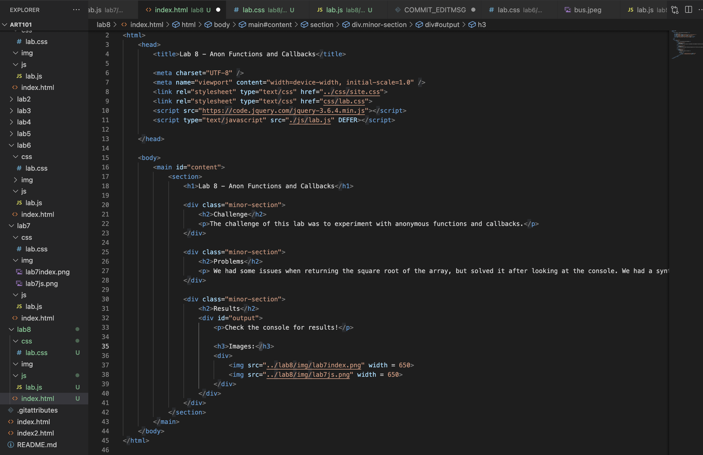
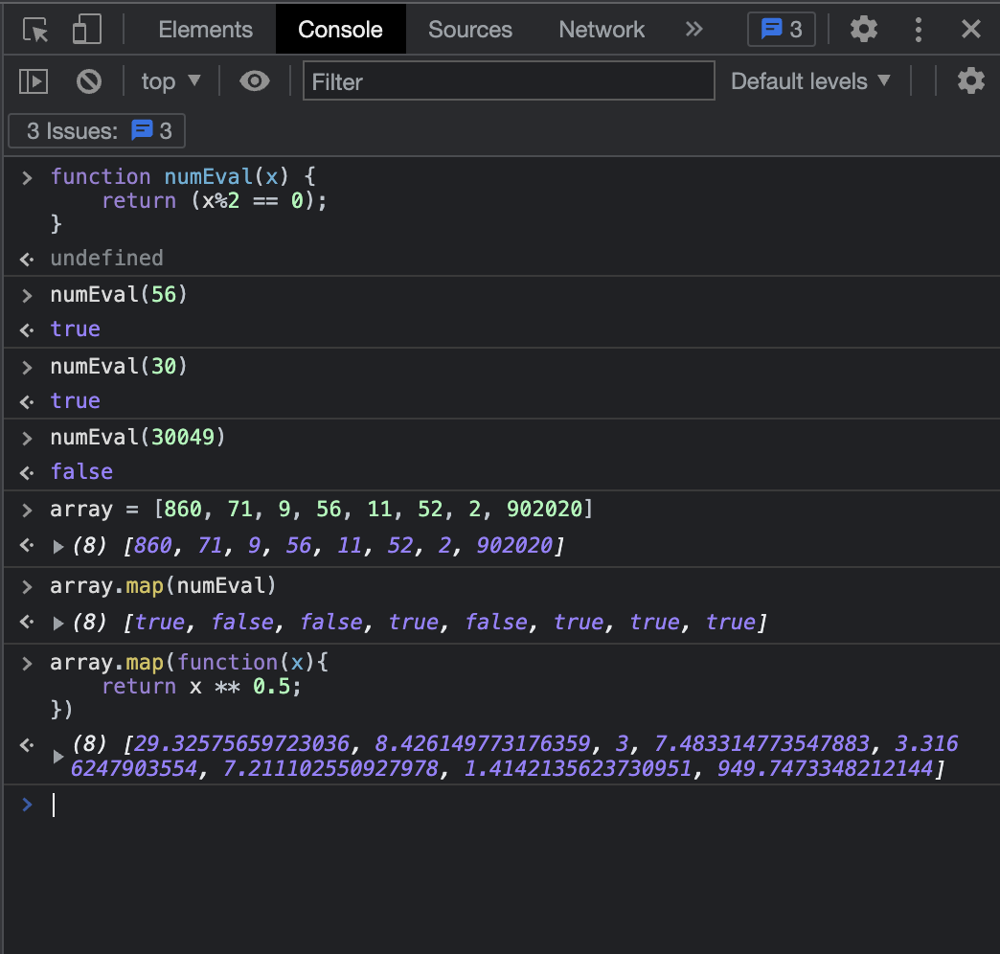
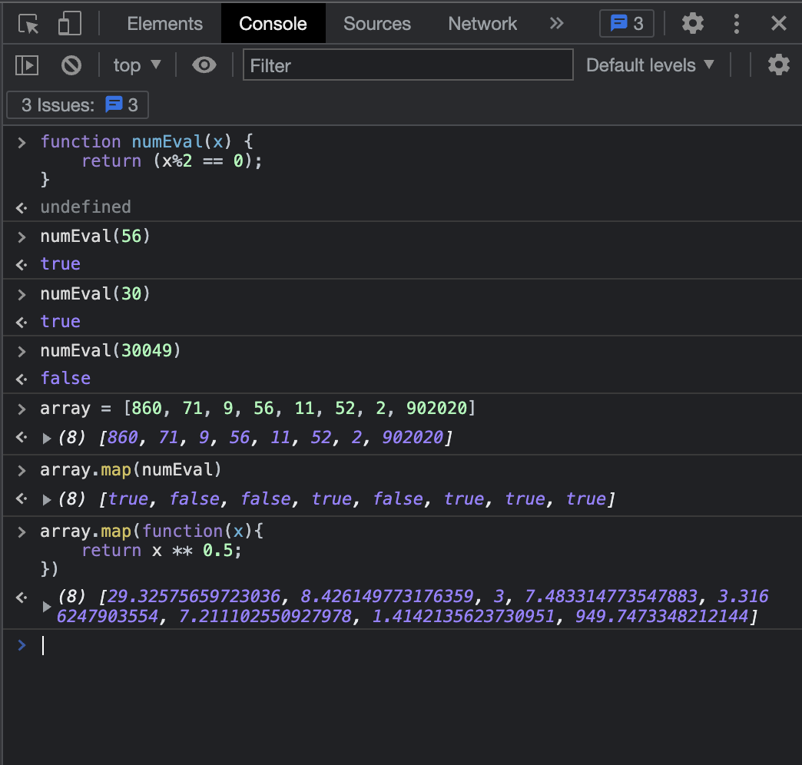
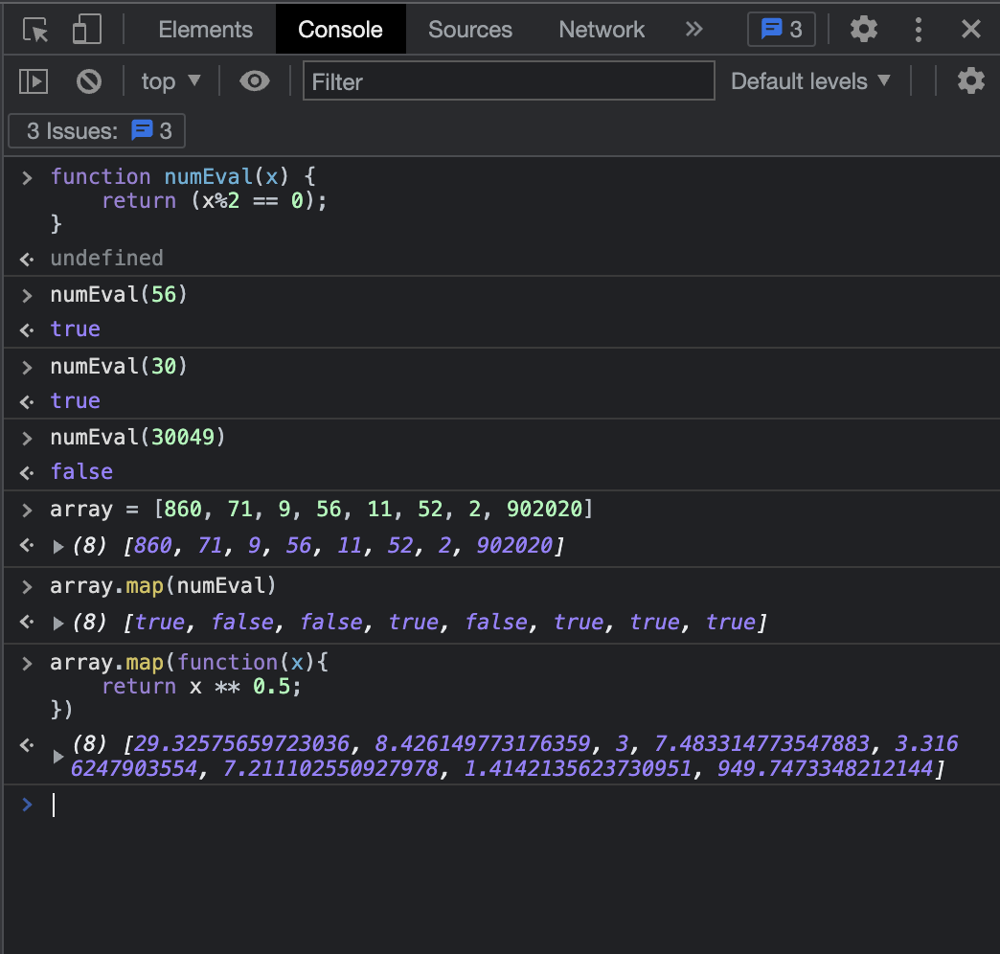

Lab 8 - Anon Functions and Callbacks
Challenge
The challenge of this lab was to experiment with anonymous functions and callbacks.
Problems
We had some issues when returning the square root of the array, but solved it after looking at the console. We had a syntax error with one of the multiplication signs.
Results
Check the console for results!
Images:

 

